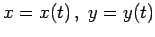
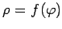

Kurven, gegeben in der impliziten Form F(x,y) =0 (3.448), in der expliziten Form y =f(x) (3.449), in der Parameterform  (3.450) oder in der Polarkoordinatenform  (3.451), werden meist mit dem Ziel untersucht, ihr Verhalten oder ihre Gestalt kennenzulernen.